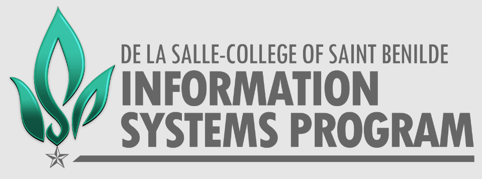

Bachelor of Science in Information Systems

1s and 0s are not just numbers
This course is for you if you believe in the importance of effective communication
to every aspect of human existence. You will learn to:
- apply system analysis and design concepts through various data gathering methodologies, standard convention and
modelling languages to create a software documentation;
- create dynamic and secured web and mobile using software development tools and industry-standard frameworks
applications to meet system requirements;
- adapt a project management integration framework guided by professional, ethical, and legal best practices in
the community to ensure that projects are executed on time and within budget; and
- work independently in a God-centered professional practice with excellence, integrity, creativity and innovation
sensitive to inclusivity and social responsibility.